Resumen Ejecutivo (Línea Base 1981-2010)
Precipitación
2646 mm
σ = 207 mm
Evapotranspiración
2613 mm
Demanda Potencial
Balance Hídrico
32 mm
Oferta Neta
Temperatura
17.2°C
Media Anual
Aridez (AI)
1.01
Húmedo
Racha Seca (CDD)
7 días
Máximo consecutivo
Evolución Histórica y Proyectada (Warming Stripes)

Análisis por Escenario
SSP1-2.6 (Optimista)
SSP3-7.0 (Medio)
SSP5-8.5 (Pesimista)
Evolución Temporal de Impactos (SSP1-2.6)
| Horizonte | Δ Temperatura | Δ Precipitación | Δ Balance Hídrico | Δ Días Secos | Δ Racha Seca (CDD) |
|---|---|---|---|---|---|
| Cercano (2021-2050) | +1.1°C | +7 mm (+0.3%) | -140 mm (-430.8%) | +9 días | +0 días |
| Medio (2041-2070) | +1.6°C | -66 mm (-2.5%) | -305 mm (-940.1%) | +14 días | +0 días |
| Tardío (2071-2100) | +1.6°C | -1 mm (-0.0%) | -224 mm (-691.7%) | +13 días | +0 días |
Cambio en Balance Hídrico (Anual)
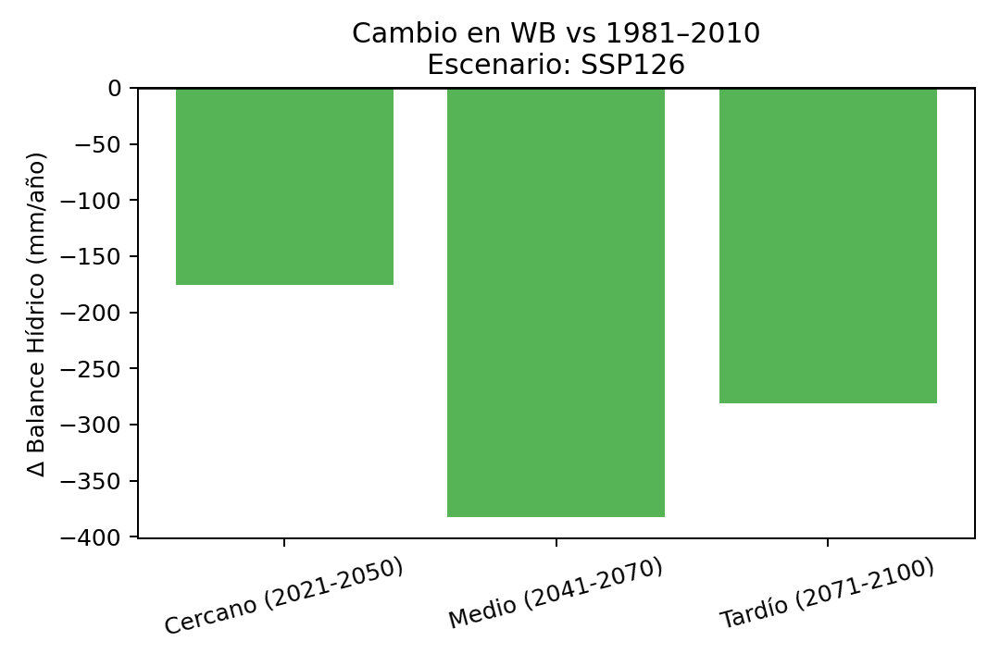
Mapa Mensual: Cercano (2021-2050)
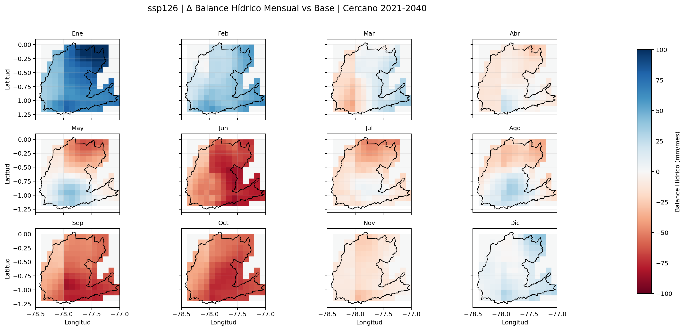
Mapa Mensual: Medio (2041-2070)
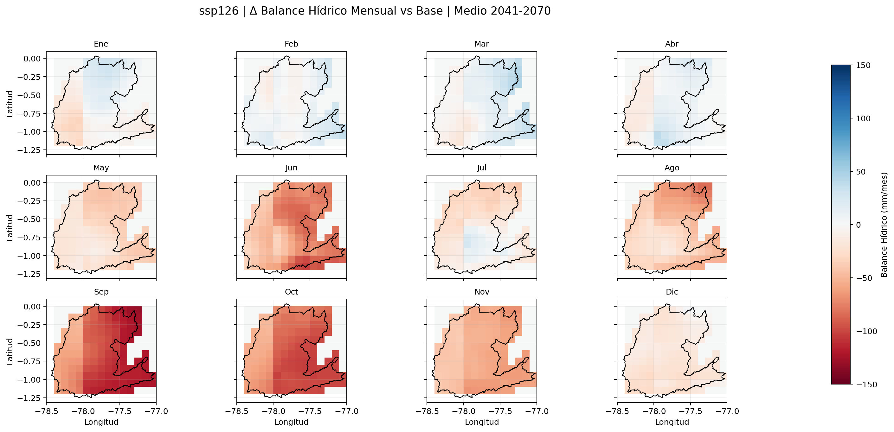
Mapa Mensual: Tardío (2071-2100)
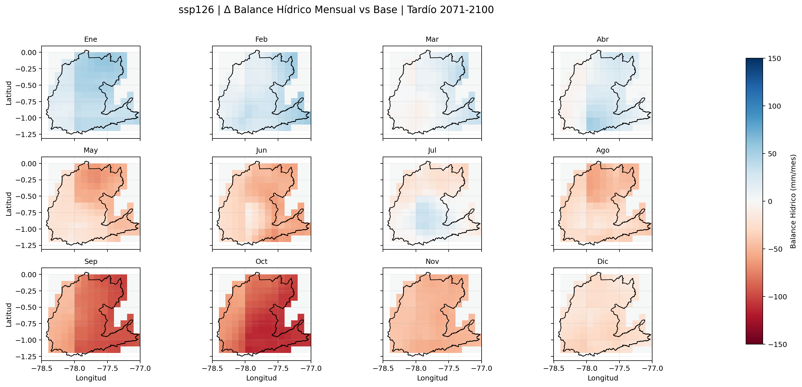

Series Temporales (1980-2100)
Temperatura Media
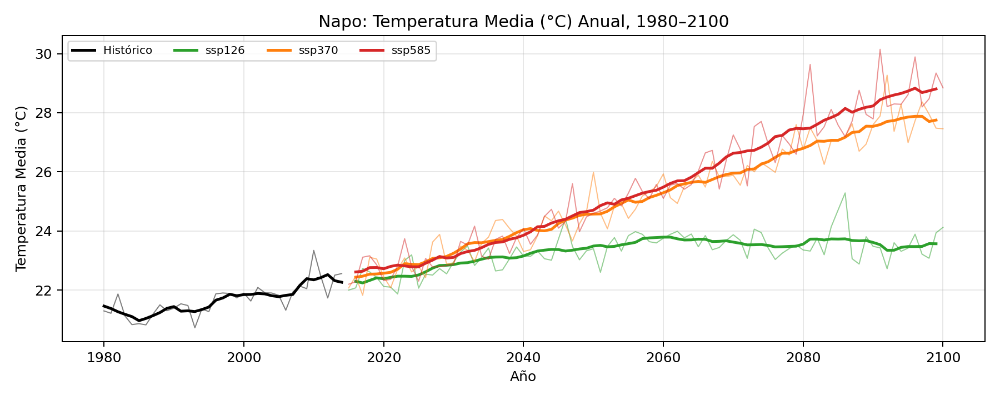
Temperatura Máxima
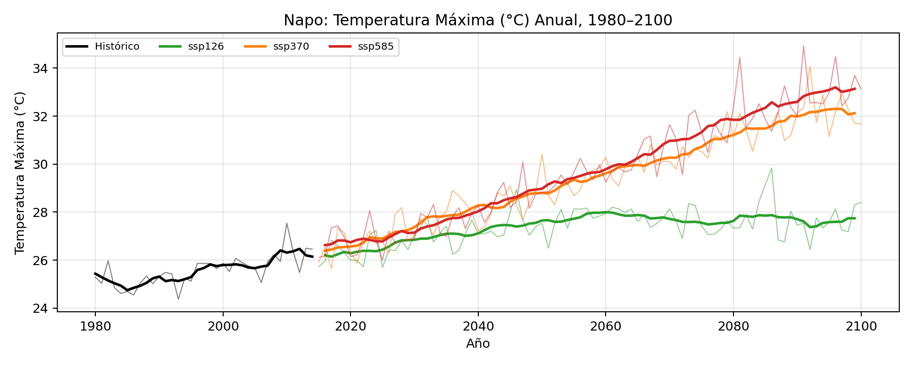
Precipitación Anual
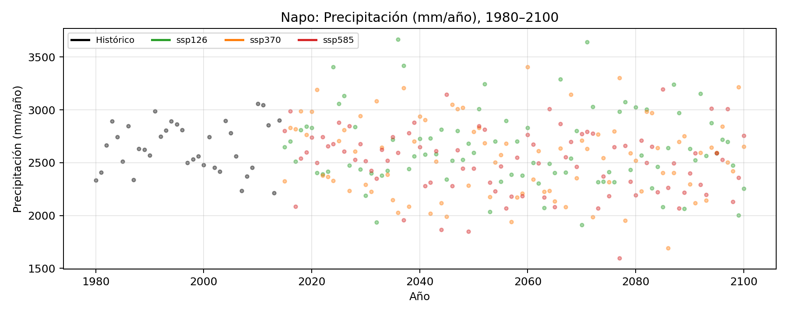
Balance Hídrico
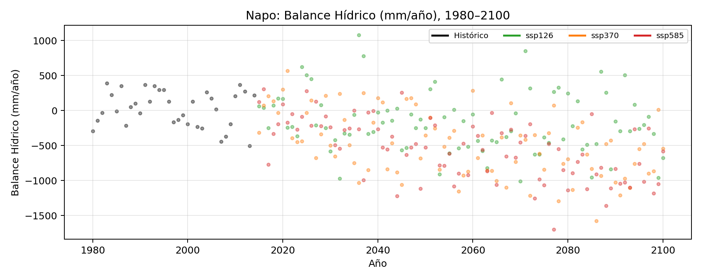
Índice de Aridez
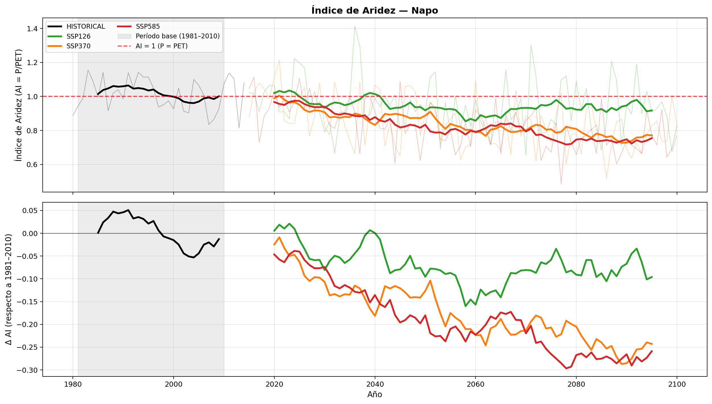
Días Secos Consecutivos (CDD)
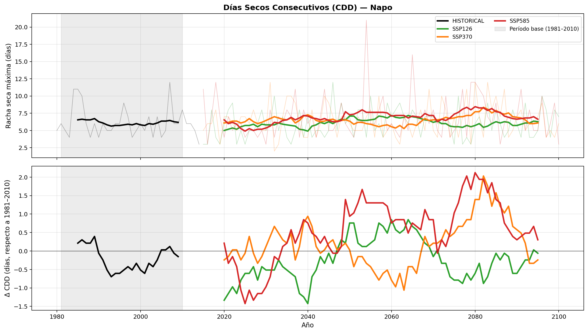
Ciclo Estacional y Cambios
Comparativa Ciclo Anual: Balance Hídrico
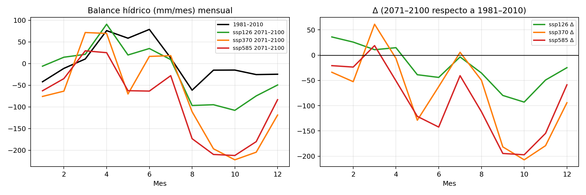
Ciclo Precipitación
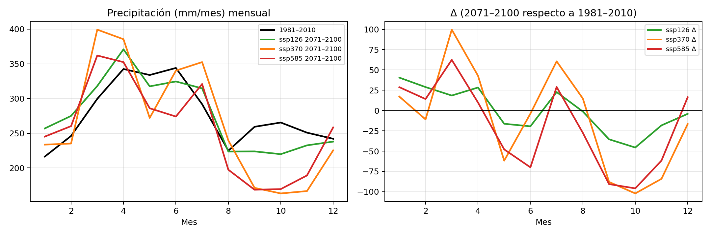
Ciclo Evapotranspiración
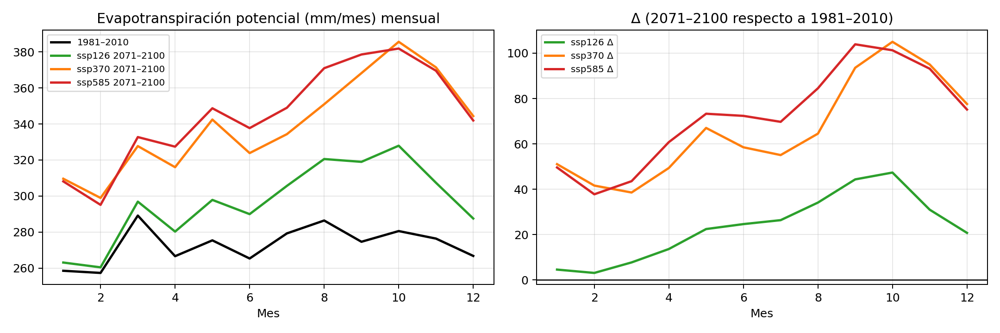
Mapas Trimestrales (Base)
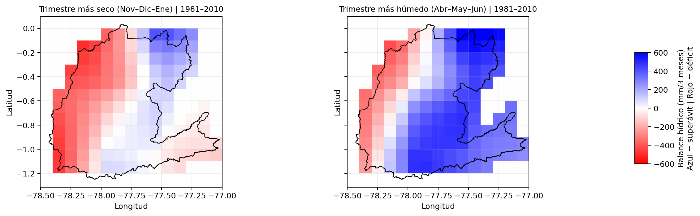
Trimestres más húmedo y seco (1981-2010)
Cambio Trimestral (SSP5-8.5)

Alteración en patrones estacionales
Análisis Espacial de Impactos
Mostrando horizonte tardío (2071-2100) bajo escenario pesimista (SSP5-8.5) para resaltar riesgos máximos.
Cambio en Precipitación
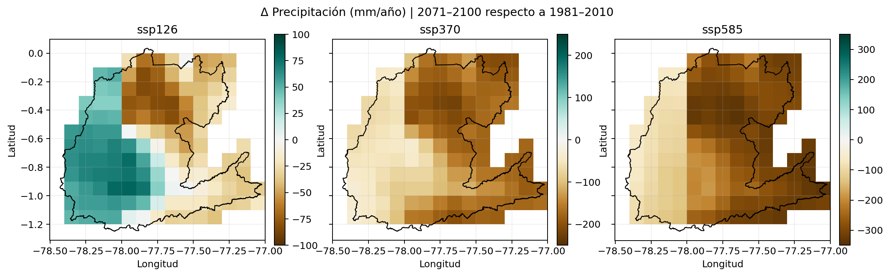
Cambio en Balance Hídrico
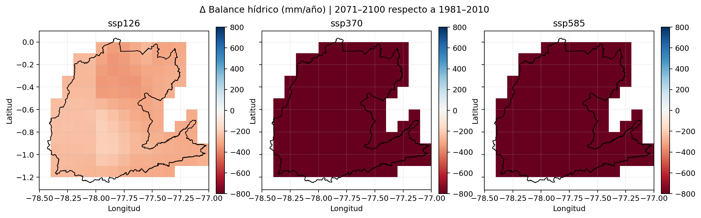
Detalle Mensual de Cambios (Delta WB)